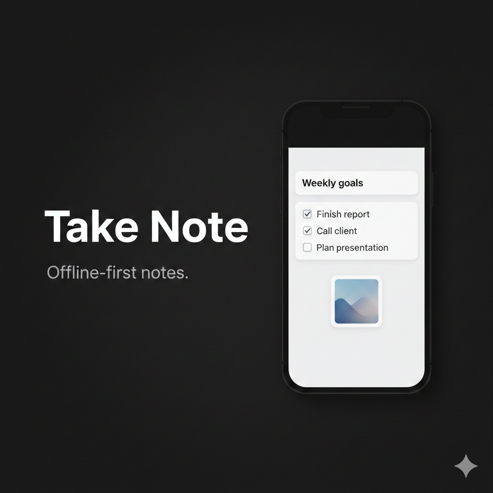

Editor em blocos
Use texto, titulos, subtitulos, citacoes, listas, listas numeradas e checklist sem friccao.
O Take Note foi feito para anotar rapido e organizar melhor. Combine texto, titulos, checklist, imagens, audio e links entre notas em uma experiencia simples, local e focada.



O app foi pensado para notas do dia a dia, listas rapidas, referencias visuais e registros com texto e audio no mesmo lugar.
Use texto, titulos, subtitulos, citacoes, listas, listas numeradas e checklist sem friccao.
Adicione imagens a nota e grave audio no app com reproducao em 1x, 1.5x e 2x.
Use cores, filtros e visualizacao em lista ou grade para encontrar o que interessa mais rapido.
As notas ficam salvas localmente no aparelho, com foco em uso rapido e privado.
O menu de blocos aparece direto no editor e reduz o atrito para montar notas com estrutura. O foco aqui nao e parecer complexo. E deixar rapido.


As capturas abaixo seguem o material ja preparado para a loja e mostram os fluxos principais do app.


Sem assinatura forcada. Pague uma vez pelo que precisa ou assine para ter tudo, incluindo backup na nuvem.
Para experimentar sem compromisso.
Pague uma vez, use para sempre.
Para quem quer o maximo do app.